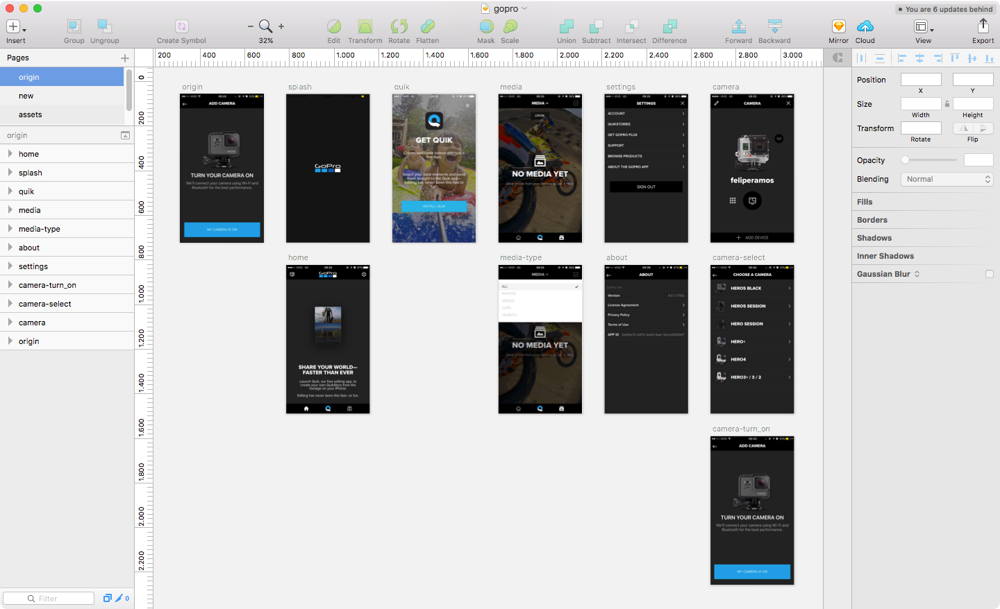
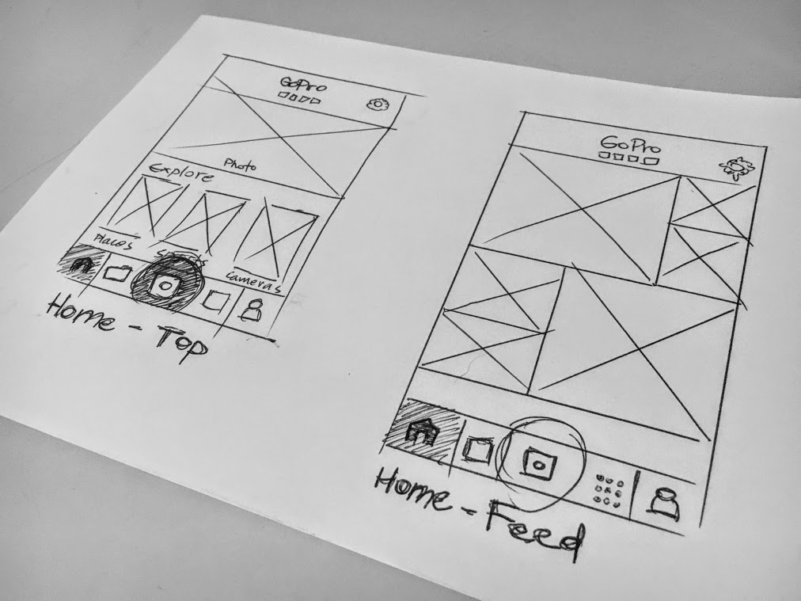
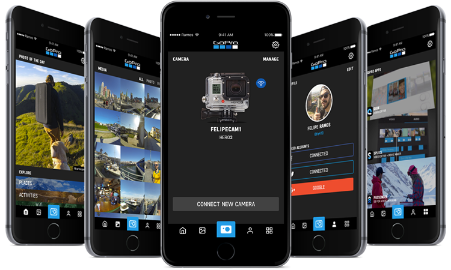

Have you ever felt that something you have or use could be better designed? From a toothbrush to those weird flight booking apps. In this case, the GoPro app is one of these things that can be reimagined with a different point of view.
I've been using GoPro cameras for about 5 years and one of the things that brought me closer to those new models in late 2012 was the possibility to connect with your smartphone, using GoPro App.
GOPRO APP GOES SOCIAL
GoPro’s insanely successful action-cam has a global footprint. The cost of the camera is now under $50.00 and millions of people are using it to document the adventurous side of their lives.
GoPro has a problem though, their current mobile app is only good for three things — to look at photos people have taken on their own cams, to edit those photos and to look at photos other people have taken around the world. For a camera that’s changing the world, this app is admittedly dull and doesn’t push the envelope.
The objective on this new design is not only focused in get a new look and usability but also suggest changes to the way that users can interact with GoPro-generated media and other users around the world.
CURRENT SCENARIO
The first step is understand the app and evaluate each element of the original version that can be maintained in the new version.
While mapping the current version, I missed a home screen, where could be used as the main screen for the new social feed.
The main feature for the current app is about connecting your GoPro camera to the app, and use through your phone. This feature doesn't have the right balance and weight on the screen and should be highlighted in some way.
THE NEW DESIGN
The new content was organized in five big groups, where the settings section was maintained in the same position, not included as main feature with the others on the bottom bar.
These five big groups are:
HOME - Feed
The new home screen is a live feed with content from users that also use GoPro cameras, publishing their own images plubicly. The main section features a motivational and inspirational image that is the one of the top photos uplodaded on that day. Users can explore photos by places, activities or cameras used. Trending photos are also showed in the section below.
MEDIA - Photos and Videos
This media section is the library where users can manage the content generated with GoPro cameras and storaged on the smartphone. The app allows you to navigate between photos and videos.
PROFILE - Account
This section is now integrated to the app. Instead of the current version that sends you to an external page, users can manage their account, signing in or signing up, linking with other social medias directly inside the GoPro app.
GOPRO APPS
The GoPro Apps section is the perfect place to deliver the latest and best releases from GoPro family or featured apps. This can also be modified or evolved to allow users to browse GoPro products and services that are available only acessing the website.
CAMERA - Connect and manage
The new camera button is now highlighted. Bigger, centered and with GoPro brand color, now users can see this option as the primary feature and go directly to your cameras navigating through the bottom bar.

USER TESTING
Every new design must be tested in action with real people for interesting (and the most part of the time) game changing feedback.
For this project, I tested a high-fidelity prototype that allowed users to navigate through all the screens with mocked up content. Even with a reduced number of users, they came up with good feedback about visual improvements on the first look.
Beyond the visual perspective, some usability improvements could be done after talking to them - like the masonry grid for the feed on the first sketches - that was modified to get a better use of the app.
APP PREVIEW
Here is a quick preview navigating through the app. We can see in action the use of main features and the settings section. This kind of prototype was used with user to get feedback.